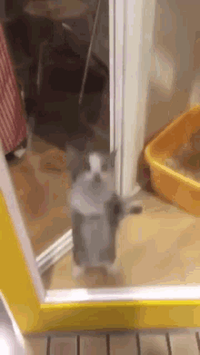

Welcome to my website. It is still under construction, so don't be surprised if you click on a broken link. Eventually I hope to add a page for each of my projects with some description of it. I also think it would be cool to have a 'library' page with books that I own and my thoughts on them (kind of like goodreads). The 'writing' page will probably just be a blog. Because I need to fill this page somehow until the site is complete, here are my favorite programming languages:
- c
- rust
- haskell
- java
- python
And the ones I don't like:
- javascript
- maybe lua, just because table indexes start at 1